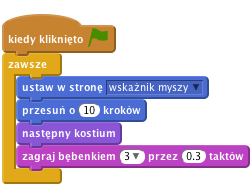
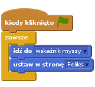
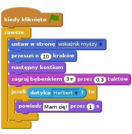
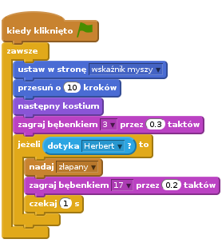
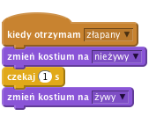
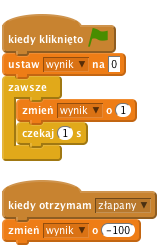

Wstęp
Zrobimy grę w berka, w której kot Feliks goni mysz o imieniu Herbert. Będziesz sterować Herbertem przy pomocy myszki i masz za zadanie nie dać się złapać Feliksowi. Im dłużej będziesz przed nim uciekać, tym więcej punktów zdobędziesz. Nie daj się złapać, bo stracisz punkty!

Krok 1: Feliks podąża za kursorem myszy
Zadania do wykonania
Stwórz nowy projekt.
Kliknij na scenę na lewo od duszka, następnie kliknij zakładkę
Tła, a później kliknij na obrazekWybierz z bibliotekii zaimportuj tło „hall” z kategorii „W pomieszczeniu”. Usuń puste tło z listy.- Kliknij na duszka, następnie kliknij na ikonkę „i” w jego lewym górnym rogu. Zmień nazwę duszka na Feliks.
- Upewnij się, że Feliks obraca się tylko w lewo i prawo, wciskając ten przycisk:

Stwórz poniższy skrypt:

Przetestuj swój projekt
Kliknij zieloną flagę.
Czy Feliks podąża za kursorem myszy? Czy wygląda jakby chodził? Czy porusza się z odpowiednią prędkością?
Zapisz swój projekt.
Krok 2: Feliks goni Herberta
Teraz sprawimy, aby Feliks zaczął gonić Herberta zamiast podążać za kursorem myszy.
Zadania do wykonania
- Stwórz następnego duszka. Kliknij
wybierz nowego duszka z bibliotekii wybierz Zwierzęta/Mouse1. - Zmień nazwę duszka na Herbert.
- Przełącz na zakładkę Kostiumy, a następnie kliknij na kostium na środku edytora. Pojawi się prostokąt wokół kostiumu. Przeciągnij róg prostokąta i zmniejsz Herberta tak, aby był mniejszy od Feliksa.
- Upewnij się, że Herbert obraca się tylko w lewo i prawo.
Dodaj poniższy skrypt do Herberta:

Przetestuj swój projekt
Wciśnij zieloną flagę.
Czy Herbert podąża za kursorem myszy? Czy Feliks goni Herberta?
Zapisz swój projekt.
Krok 3: Feliks ogłasza, że złapał Herberta
Chcemy, aby Feliks nam powiedział, że złapał Herberta.
Zadania do wykonania:
Zmień skrypt Feliksa na poniższy:

Przetestuj swój projekt
Wciśnij zieloną flagę.
Czy Feliks mówi, że złapał Herberta?
Zapisz swój projekt.
Krok 4: Herbert zamienia się w ducha po złapaniu
Zamiast wiadomości od Feliksa, że złapał mysz, chcemy, aby Herbert zamienił się w ducha.
Zadania do wykonania
Zamień skrypt Feliksa na poniższy, aby nadać wiadomość o złapaniu Herberta.

Dodaj Herbertowi nowy kostium: zaznacz Herberta, przejdź do zakładki Kostiumy i kliknij
wybierz kostium z biblioteki. Wybierz kostium Fikcja/ghost2-a.Zmniejsz nowy kostium klikając na niego w edytorze i przeciągając róg prostokąta, który się pojawi.
Zmień nazwy kostiumów Herberta: mysz nazwij „żywy”, a ducha - „nieżywy”.
Dodaj nowy skrypt do Herberta, który zamienia go w ducha:

Przetestuj swój projekt
Wciśnij zieloną flagę.
Czy Herbert zamienia się w ducha, gdy zostanie złapany?
Czy Feliks wydaje odpowiednie odgłosy w odpowiednich momentach?
Czy po złapaniu Feliks nie rusza się odpowiednio długo, aby Herbert mógł od niego uciec?
Zapisz swój projekt.
Krok 5: Liczymy punkty
Dodajmy licznik punktów, aby było widać, jak dobrze nam idzie ratowanie Herberta.
Zaczniemy od zera i co sekundę będziemy dodawać jeden punkt. Gdy Feliks złapie Herberta, odejmiemy sto punktów.
Zadania do wykonania
Stwórz zmienną o nazwie „Wynik” dla wszystkich duszków. Aby to zrobić, kliknij na
Dane, stwórz zmienną i nazwij jąwynik. Upewnij się, że opcja “Dla wszystkich duszków” jest zaznaczona.Kliknij na Scenę i dodaj oba poniższe skrypty:

Przetestuj swój projekt
Wciśnij zieloną flagę.
Czy wynik rośnie co sekundę o jeden punkt?
Czy ilość punktów spada o 100, kiedy Herbert zostanie złapany?
Co się dzieje, kiedy Herbert zostanie złapany zanim wynik wzrośnie do 100? Czy wynik zeruje się przy rozpoczęciu nowej gry?
Zapisz swój projekt
Brawo! To by było na tyle, teraz możesz cieszyć się swoją grą!
Nie zapomnij, że możesz podzielić się swoją grą ze swoimi przyjaciółmi i rodziną. Żeby to zrobić, kliknij menu Udostępnij.